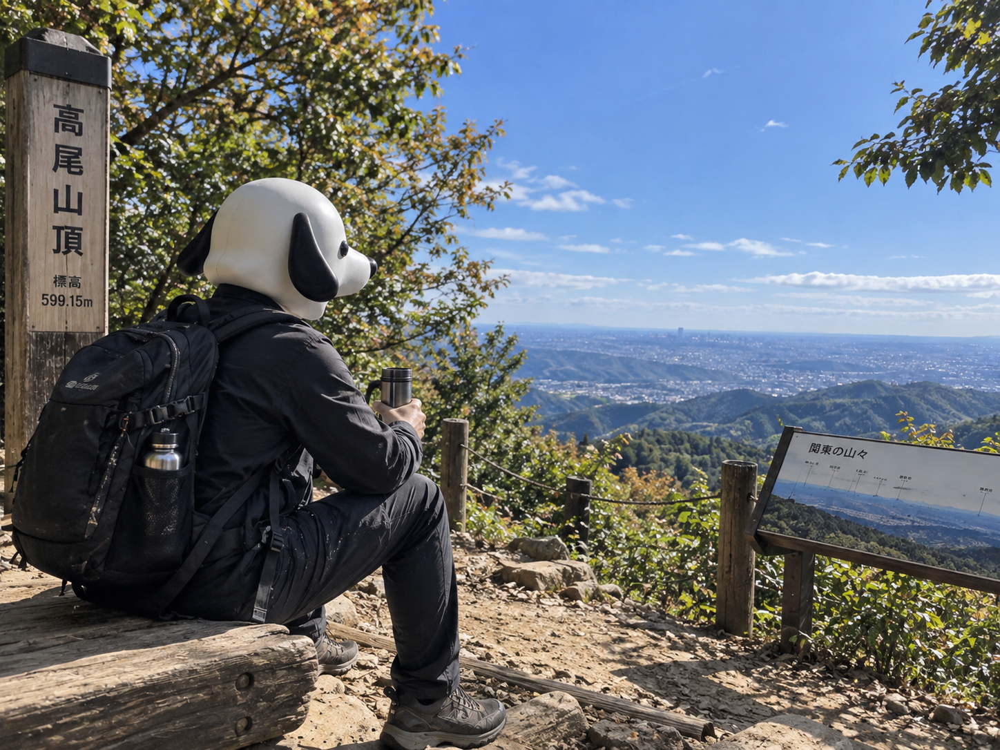

CEO'S NOTE
山にノートPCを持っていって、開かなかった

こんにちは。TY-Dev Works CEOのT-Yです。
今日は一人で、高尾山に来ています。
土曜日です。
東京は昼間よく晴れて、高尾山も歩くには気持ちのいい天気になりました。
こういう日は、たまにはパソコンから離れて山でも歩こうと思います。
そう思って家を出ました。
リュックの中にはノートPCが入っています。
開始五分で、計画に矛盾があります。
持ってきた理由はあります。
山の上で何かアイデアが浮かぶかもしれない。
少しコードを確認したくなるかもしれない。
緊急で何か直したくなるかもしれない。
ノートPC。
ACアダプター。
モバイルバッテリー。
念のためのケーブル二本。
水。
タオル。
おにぎり。
僕のリュックは、登山用というより小規模な開発拠点になっていました。
高尾山口を出た時点では、まだ余裕があります。
二十分後。
ノートPCの存在感だけが、かなり大きくなっています。
途中でケーブルカーが横を通りました。
乗れば速い。
しかも座れる。
今日は山を歩きに来たので、そのまま歩きます。
これは正しい判断です。
たぶん。
ただ、坂道で背中のノートPCが一歩ごとに主張してきます。
「本当に僕も必要でしたか」
聞こえた気がしました。
必要だと思って持ってきました。
要件定義の責任者は僕です。
苦情の提出先も僕です。
休憩しながら、今日のAIニュースを読みました。
Reutersによると、世界のデータセンターへの累積支出は2050年までに30兆ドルを超える可能性がある一方、AIによる幅広い生産性向上が投資規模に見合う速さで現れるかについては、まだ議論があります。
鉄道やインターネットのような過去の大きな技術も、社会全体の生産性として効果が見えるまで長い時間がかかったという話も紹介されていました。
大きな設備。
大量の計算資源。
巨額の投資。
どれも、可能性を広げるためには必要です。
でも、持っているだけで価値が生まれるわけではありません。
使われて、初めて意味が出てきます。
背中に入っているノートPCが、急にものすごく身近な例に思えてきました。
今のところ利用率は0%です。
重量への貢献率だけは非常に高いです。
ソフトウェアも似ています。
高性能な仕組みを作る。
機能を増やす。
新しい技術を入れる。
もちろん楽しい。
でも、その先で誰かが使わなければ意味がありません。
作れるものより、使われるものを作る。
TY-Dev Worksでは、そこを忘れないようにしたいと思っています。
速い処理も、少ないメモリ使用量も、分かりやすいUIも、全部そのためです。
技術そのものを見せるためではなく、使っている人が気持ちよく目的を達成するためにある。
山にノートPCを運んでいる人が言うと、少し説得力が落ちます。
そこは認めます。
山頂に着きました。
景色を見ます。
水を飲みます。
おにぎりを食べます。
ベンチに座ります。
そして、いよいよリュックを開けました。
ノートPCはそのままにして、スマートフォンでメモを一行だけ書きました。
「山にPCはいらない。」
今日いちばん重要な仕様変更です。
帰りは少し荷物が軽くなりました。
水を飲んで、おにぎりを食べたからです。
ノートPCの重量は最後まで一グラムも減りませんでした。
家に着いて確認すると、バッテリーは100%でした。
僕のほうは、だいたい3%でした。
次回は設備投資の前に、利用計画を確認したいと思います。
それでは、また。
Simple Software. A Better Tomorrow.
TY-Dev Works CEO
T-Y 🐕